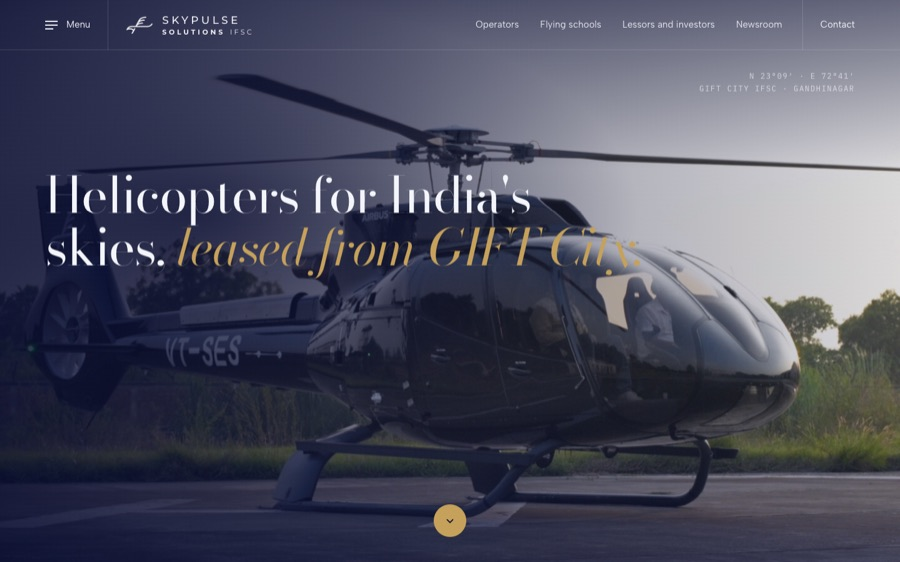
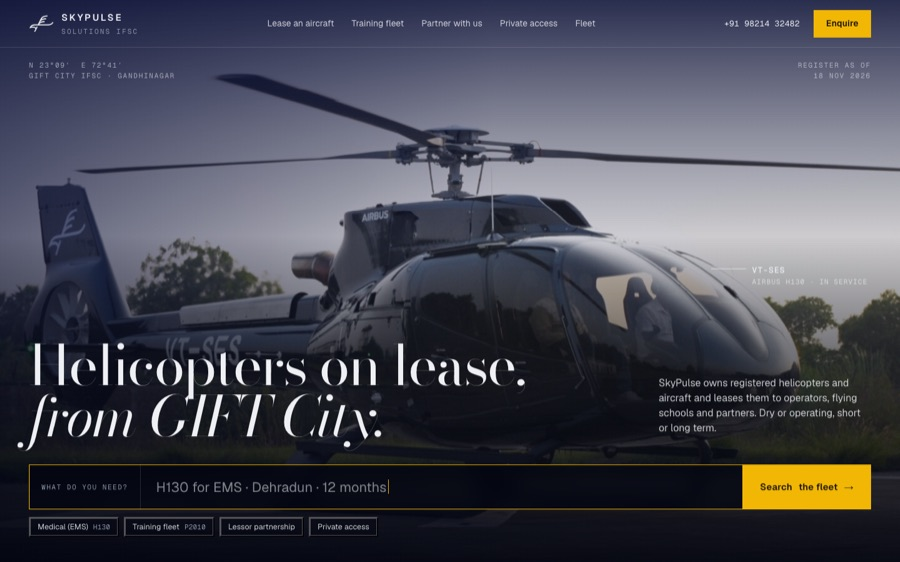
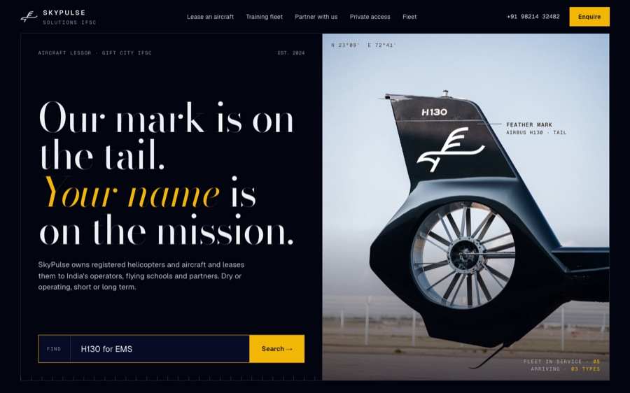
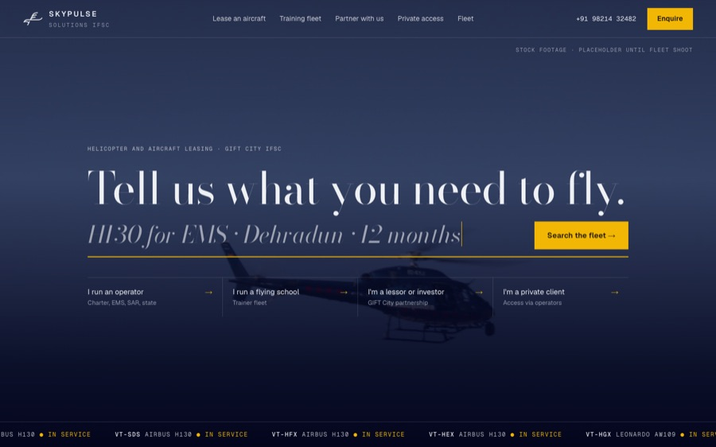

SkyPulse Solutions IFSC · Website draft
SkyPulse Solutions IFSC · Website draftHome page directions.
Each link opens a working prototype of the new home page. Try them on a phone too.
Draft for review only. Fleet details, tax figures and regulatory wording are placeholders awaiting confirmation. Stock footage stands in until a fleet shoot.
Latest · Round 2

Built to establish the SkyPulse brand rather than to sell, in the manner of airbus.com: a full-screen film, who we are, our missions, the fleet, GIFT City and the newsroom. There is no call to action.
Use the Review switch at the bottom right to compare a serif or a light sans headline, and the stock film or a real VT-SES photograph.
Open →Earlier · Round 1 · enquiry-led, now superseded

Full-bleed VT-SES at golden hour. This is the only full page, so scroll to see the fleet register, lease terms, GIFT City and proof.
Open →
An edgier, near-black inset frame around the feather mark on the H130 tail, with the search set in the copy panel.
Open →
The search is the headline. Visitors pick who they are, and the fleet register runs along the bottom.
Open →- Does round 2 feel like SkyPulse, and like a company you would trust with an aircraft?
- Serif or light sans for the headlines? Film or photograph for the opening?
- Anything that feels off-brand, generic or hard to read?